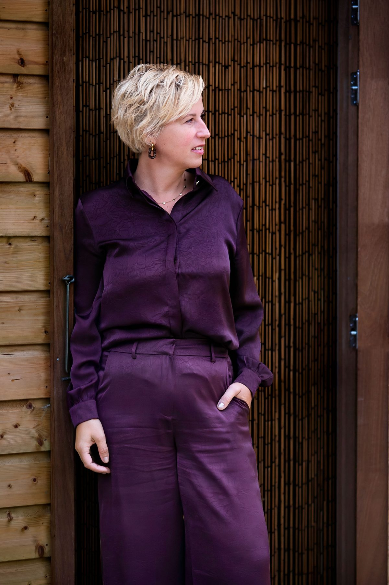
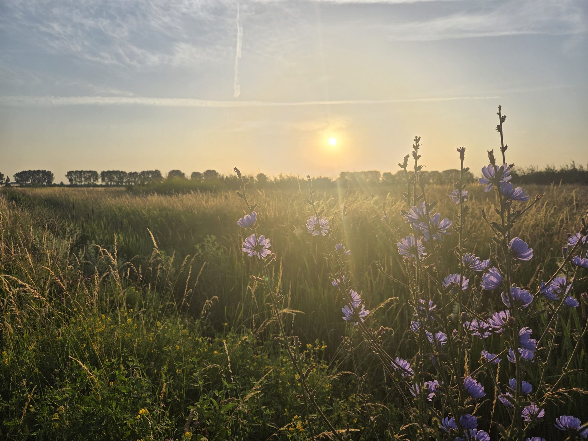
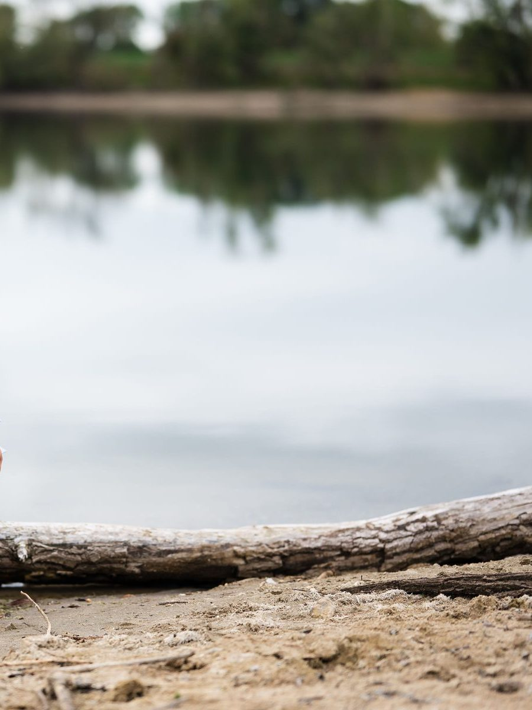
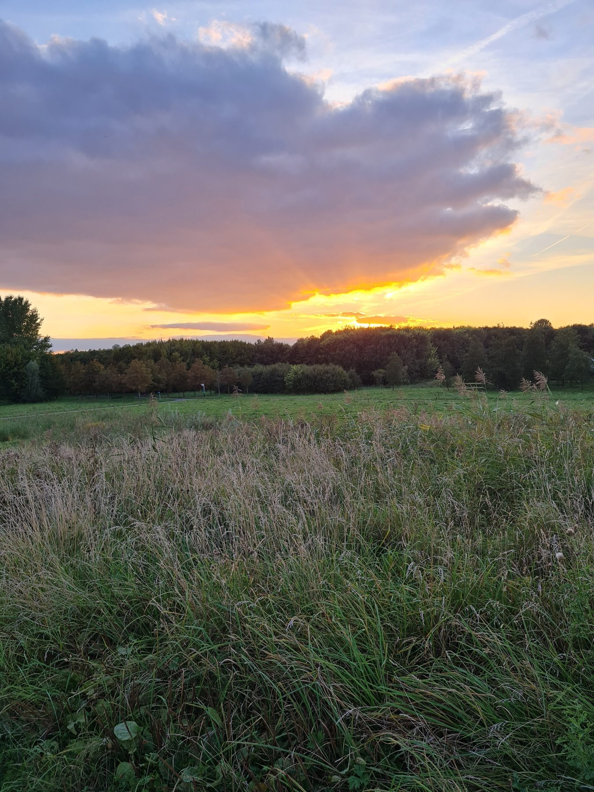
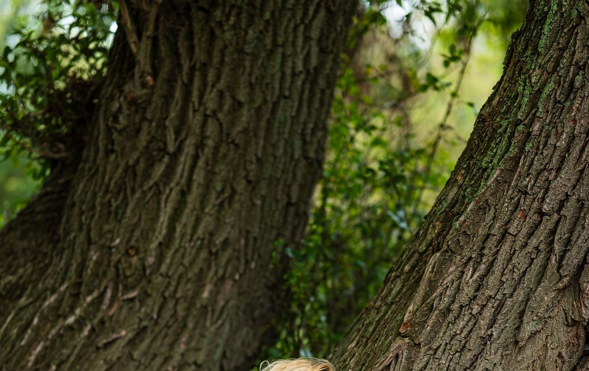
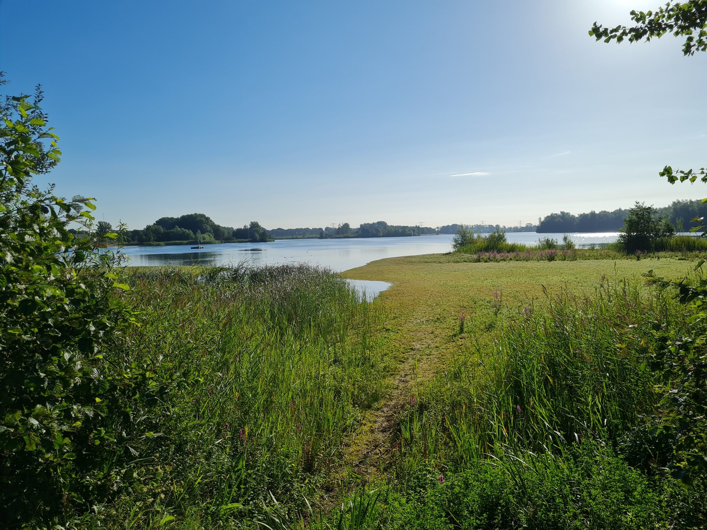
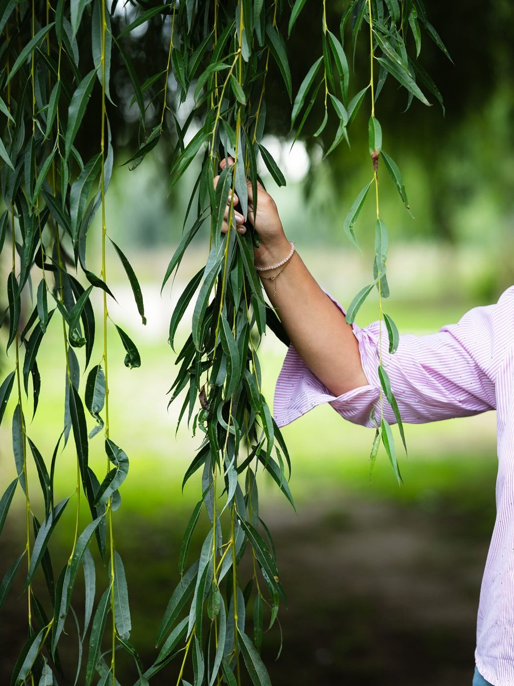
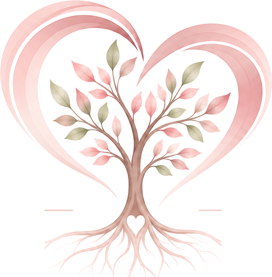

Hier deel ik mijn gedachten, inzichten en ervaringen over voelen, vertrouwen, persoonlijke ontwikkeling, relaties, verlies en verandering. Je vindt hier mijn eerdere blogs én nieuwe artikelen.
Blog
Blog
Over voelen, vertrouwen en persoonlijke groei

4 november 2026 · Nieuw
Een nieuwe naam, dichter bij mezelf
Van Praktijk De Magnolia naar Liesbeth Postma
Soms komt er een moment waarop je voelt dat iets mag veranderen. Niet omdat het oude niet meer goed is, maar omdat je zelf bent gegroeid.
Lees het hele artikel
3 november 2025
Wat zingeving voor mij betekent
Voelen wat klopt, ook als het leven niet vanzelf gaat
De laatste tijd stel ik mezelf steeds vaker de vraag: wie of wat geeft mijn leven zin? Juist in een periode waarin het leven niet vanzelf gaat.
Lees het hele artikel30 augustus 2025
Samenwerking tussen reguliere en complementaire zorg
Aangesloten bij het Trauma Expertise Centrum
Als RBCZ-professional heb ik mijn praktijk aangesloten bij het Trauma Expertise Centrum, een initiatief dat cliënten met een hulpvraag rond trauma en zorgaanbieders bij elkaar brengt.
Lees het hele artikel
11 augustus 2025
Herstel je balans
Psychosociale en lichaamsgerichte hypnotherapie
In tijden van crisis of ontregeling kan het voelen alsof je jezelf even kwijt bent. Hoe je opnieuw verbinding maakt met je energie, veerkracht en innerlijke balans.
Lees het hele artikel
5 maart 2024
Doorgaan als het moeilijk wordt
Na een burn-out, verlies, rouw of scheiding
Hoe ga ik door na een burn-out, verlies van mijn baan, rouw of een scheiding? Een vraag die ik mijzelf stelde en die ik vaak hoor in mijn praktijk.
Lees het hele artikel
31 juli 2023
Jouw plek in het familiesysteem
Over afwijzing, loyaliteit en de onderstroom
Je afgewezen voelen doet pijn. Het ondermijnt je zelfvertrouwen en kan leiden tot een diepe angst voor toekomstige afwijzing. Hoe komt dat?
Lees het hele artikel
29 juli 2023
Krijg inzicht in de reden van je burn-out
Klachten herkennen en begrijpen hoe het zover kwam
Bij stress of burn-out kun je last hebben van uiteenlopende klachten. Inzicht krijgen in hoe het zover is gekomen, is het begin van herstel.
Lees het hele artikel
15 mei 2023
Hoe vroegkinderlijk trauma invloed heeft op je toekomst
Triggers, overlevingsmechanismen en de moed om te voelen
‘Wat ik ook doe, ik doe het nooit goed genoeg.’ Zulke gedachten zijn vaak triggers als gevolg van trauma dat je diep hebt weggestopt.
Lees het hele artikel
Leer te voelen – durf te vertrouwen
Wat gevoeld mag worden, kan weer gaan stromen.
Plan een kennismaking